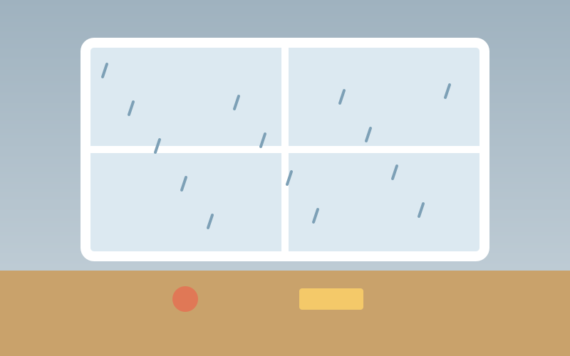

St. Christopher's spring fair
- Location
- St. Christopher's school, Port Credit
- Cost
- Not given
Component · Containers and overlays
A card holds one thing the family might do or has done: a place, a restaurant, an event, a past weekend, a submission waiting for review. It shows the facts that decide it and the actions that act on it.
Use a card when each item in a collection needs its own picture, facts and actions, and people compare items side by side: the Ideas grids, Past weekends, the review queue. Use a list when items are uniform rows a person scans and opens (Who's in, the admin Places list). Use a section to group a page, never a card around a whole section.
.card) is a white surface with a hairline border and 16px padding..card--media with .card__media) leads with a 16:9 photo or a tinted fallback tile. Every idea card and past weekend uses it (28 of the 47 cards in the mocks)..card--pad-lg) is for dense, standalone records: review submissions and admin stat cards..card--sunk) is a summary inside another surface, such as the submission recap in a dialog (D11, D23)..card--interactive) is a card whose only job is to open something. One real link stretches over it (.card__stretch); the card itself is not the control. Photo · placeholder
Photo · placeholderTerre Bleu Lavender Farm
Lavender peaks 17 to 24 May, and Mae is old enough to walk the rows this year.
.media.card__media, 16:9, bleeds to the card edges; credit pill bottom right. A tinted .media--fallback tile when there is no photo..card__head: optional date tile, then .card__title (--typographyTitle3) and .card__meta in .card__head-text..chip as the last child of the head is pushed to the right: Top pick, Locked for dinner, Pending..card__body, --typographyBody2 in the secondary colour; clamp to two lines in grids..card__chips: drive time, ages, tags. Three at most..card__footer sits at the bottom (margin-top: auto) so footers line up across a row. Small buttons, primary last.--colorNeutralBackground1, 1px --colorNeutralStroke2, --borderRadiusLarge, 16px padding, 10px gap.Three content shapes cover every collection in the mocks: a photo-led idea, a fallback tile when a place has no photo, and an event with a date tile.
 Photo · placeholder
Photo · placeholderShort trail, washrooms, picnic tables. Your usual win, with a splash pad if it gets hot.
.card--media.<li class="card card--media">
<div class="media card__media"><img class="media__img" src="bronte-creek.jpg" alt="A creek winding through green parkland"><span class="media__credit">Photo · Jo Doe</span></div>
<div class="card__head"><div class="card__head-text"><h3 class="card__title">Bronte Creek Provincial Park</h3><p class="card__meta">Oakville</p></div></div>
<p class="card__body clamp-2">Short trail, washrooms, picnic tables.</p>
<div class="card__chips">…</div>
<div class="card__footer">…</div>
</li>Past cards put a date eyebrow and a favourite toggle in a .card__row, make the title a rename button (.card__title-btn), and split the footer into two equal buttons (.card__footer--2up).

Your photoRained Saturday. Indoor crafts saved it; Sunday hike at Riverwood.
--interactive.Port Credit Buskerfest
These change how a card reads after the family decided something. Each one also says it in words: a chip, a disabled button with a reason nearby, or a heading above the group.
Dinner is locked at Jack Astor's.
When the whole card opens one thing and has no other controls, make the title a link with .card__stretch on a .card--interactive. Its ::after covers the card, so a tap anywhere follows the link, but the accessible control is still just the link.

16 – 17 May 2026
alt="") because the title names the weekend.Cards take their width from the grid they sit in (container and grid). The only size choice is padding: 16px by default and 24px with .card--pad-lg (Angular padding="lg"). Locked and selected cards subtract 1px from the padding to absorb their 2px border, so content does not shift when the state changes.
Default
Large
Only .card--interactive responds to the pointer. A static card never changes on hover; its buttons do. Focus is drawn on whatever has focus: on a static card that is a footer button, on an interactive card it is the stretched link, and the ring goes round the whole card.
| Variant | Default | Hover | Focus within | Selected | Locked | Dimmed |
|---|---|---|---|---|---|---|
| Static | The Rec Room |
The Rec Room |
The Rec Room |
The Rec Room |
The Rec Room |
The Rec Room |
| Interactive |
Terre Bleu Lavender Farm
Jack Astor's
Port Credit Buskerfest
This weekend
Terre Bleu Lavender Farm
Jack Astor's
Port Credit Buskerfest
This weekend
--colorNeutralStroke1, --shadow16, 2px lift..card--interactive:has(.card__stretch:focus-visible) draws it there and drops the link's own ring, so there is only one.--colorBrandStroke1 border. The control that chose it carries the state (aria-pressed="true", a checked radio or aria-current); the border only echoes it.--colorStatusSuccessBackground3 border plus a "Locked" chip..grid-cards is one column on phones, two from 720px and three from 1024px; .grid-cards--2 stops at two (Food's dinner picks). A .card--span card takes the full row (the Top pick on Food).object-fit: cover centres them..card__footer--2up keeps two equal columns at every width. Footers sit at the bottom so a row of cards lines its buttons up..clamp-2; meta lines wrap rather than truncate.The card has no component tokens: it reads alias tokens directly, and every variant is a class. In the dark theme the card surface (--colorNeutralBackground1) is a warm umber one step lighter than the page, so cards rise rather than sink; the hairline stays visible because --colorNeutralStroke2 lightens with it. Sunk cards use --colorNeutralBackground3 in both themes. Locked and selected borders switch to their lighter dark-theme steps and stay above 3:1 against the page.
/* A card inside a dialog reads as a recap, not a second dialog */
.dialog__body .card { /* use .card--sunk instead of restyling */ }No ARIA pattern: a card is a grouping, not a widget. In a collection it is an <li> in a <ul class="grid-cards">, so screen readers announce "list, 3 items". Standalone records are <article aria-labelledby="…"> pointing at the title (Review submissions). An interactive card is a plain element with one <a> inside; never put role="link" or a click handler on the card, and never wrap a card that contains buttons in an <a>.
| Key | Action |
|---|---|
| Tab / Shift+Tab | Moves through the card's controls in reading order: title button, favourite, footer buttons. An interactive card is one tab stop. |
| Enter | Follows the stretched link, or activates the focused button. |
| Space | Activates the focused button (favourite, vote, Add to day). |
Controls inside a card show the shared 2px --colorStrokeFocus2 ring. On an interactive card the ring goes round the whole card (2px offset, outside the border), so it matches the area a tap would hit. The card never takes focus itself.
The title is a heading at the right level (h3 under a section's h2). Repeated buttons name their object, either in the visible label or with an aria-label that starts with the visible text ("Add to day: Terre Bleu Lavender Farm"), so voice control still works (2.5.3). Photos describe the scene (alt="Rows of lavender running to the horizon"); fallback tiles and photos that repeat the title are aria-hidden or alt="". A date tile is aria-hidden because the meta line says the date in words.
The card's own hairline (--colorNeutralStroke2) is decorative: the card is identified by its content, not its edge, so it does not need 3:1.
Interactive cards transition border, shadow and a 2px lift over --durationFast. Under prefers-reduced-motion the duration is zero and the lift is instant.
Footer buttons are 32px tall with 8px between them; an interactive card's whole surface is the target. Favourite and vote toggles keep at least 32px. Never place a small control inside an interactive card: the stretched link would cover it.
.card__stretch. Screen readers hear one link with a clear name.Bronte Creek + Rec Room
Jack Astor's
Jack Astor's
Royal Botanical Gardens
Royal Botanical Gardens
| Part | Token | Light | Dark |
|---|---|---|---|
| Surface | --colorNeutralBackground1 | ||
| Border | --colorNeutralStroke2 | ||
| Border, interactive hover | --colorNeutralStroke1 | ||
| Sunk surface | --colorNeutralBackground3 | ||
| Title | --colorNeutralForeground1 | ||
| Meta, body, eyebrow | --colorNeutralForeground2 | ||
| Locked border | --colorStatusSuccessBackground3 | ||
| Selected border | --colorBrandStroke1 | ||
| Border width, default / locked | --strokeWidthThin / --strokeWidthThick | / | |
| Radius | --borderRadiusLarge | ||
| Padding default / large | --spacingHorizontalL / --spacingHorizontalXL | / | |
| Gap between parts | --spacingVerticalMNudge | ||
| Title / body / eyebrow type | --typographyTitle3, --typographyBody2, --typographyCaption1Strong | ||
| Hover shadow | --shadow16 | ||
| Transition | --durationFast, --curveEasyEase | ||
<ul class="grid-cards">
<li class="card card--media card--locked">
<div class="media media--fallback media--sun card__media" aria-hidden="true">…</div>
<div class="card__head">
<div class="card__head-text"><h3 class="card__title">Jack Astor's</h3><p class="card__meta">Casual · Kids' menu · Square One</p></div>
<span class="chip chip--accent">…Locked for dinner</span>
</div>
<div class="card__footer"><button class="btn btn--quiet btn--sm" type="button">Unlock</button></div>
</li>
</ul>
<article class="card card--interactive">
<h3 class="card__title"><a class="card__stretch" href="/weekends/2026-05-16">This weekend</a></h3>
<p class="card__meta">Lavender fields at Terre Bleu, lunch at La Marina</p>
</article>
<sd-card variant="sunk" padding="lg">…</sd-card>| Class | Effect |
|---|---|
.card | Base surface, border, radius, 16px padding, column with 10px gap. |
.card--media + .card__media | No top padding; the media bleeds to the edges. |
.card--pad-lg | 24px padding. |
.card--sunk | Well surface, no border; for recaps inside another surface. |
.card--locked .card--selected | 2px success or brand border; pair with words. |
.card--dimmed .card--muted | 60% / 85% opacity; pair with a reason or a status chip. |
.card--span | Spans every column of the grid. |
.card--interactive + .card__stretch | Hover lift; the link's ::after covers the card. |
.card__head .card__head-text .card__title .card__meta | Head row; a trailing .chip is pushed right. |
.card__body .card__chips .card__eyebrow .card__row | Body text, chip row, uppercase date line, space-between row. |
.card__footer .card__footer--2up | Action row pinned to the bottom; two equal columns. |
.card__title-btn | A title that is also a button (rename on Past). |
data-state="hover|focus" | Documentation only. |
Extracted from these mocks (47 cards):
Drift fixed: D12 the 11px credit, D17 the literal colours, D21 hover-only actions. .card--selected and .card--interactive exist in the mocks' CSS but no mock uses them yet. Added in extraction: the focus ring round an interactive card when its stretched link has focus.